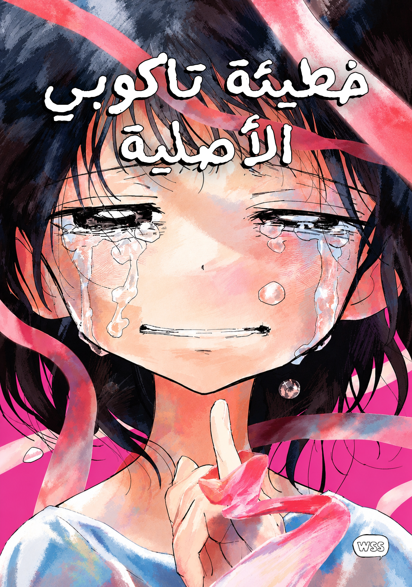

MANGA FEATURE / 001
خطيئة تاكوبي الأصلية
Takopii no Genzai / Takopi's Original Sin
زائرٌ صغير من كوكب السعادة يصل إلى الأرض حاملاً أدواتٍ لا يعرف بها سوى الفرح. وحين يلتقي بشيزوكا، يكتشف أن إنقاذ شخصٍ ما قد يكون أعقد بكثير مما يتصوّر.
WHITE SHADOW SUBS
فريق يهتم بأن تصل الحكايات كما تستحق: واضحة، دقيقة، ومصاغة بعناية.
02 / قيد التحرير
قريباً على هذه المساحة
نُحضّر حكايات تستحق المشاهدة.
03 / مختاراتنا

MANGA FEATURE / 001
Takopii no Genzai / Takopi's Original Sin
زائرٌ صغير من كوكب السعادة يصل إلى الأرض حاملاً أدواتٍ لا يعرف بها سوى الفرح. وحين يلتقي بشيزوكا، يكتشف أن إنقاذ شخصٍ ما قد يكون أعقد بكثير مما يتصوّر.